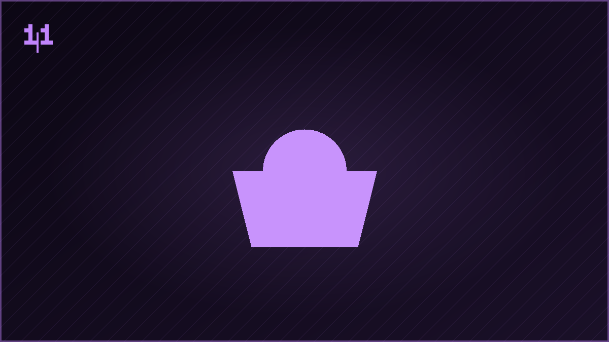

Personagem
Tinker Ghost Rider Bell
Crossover de universos: a fada que se torna motoqueiro fantasma, transformada na textura.

📐 Características
🖼️ Galeria do Trabalho
Registros visuais do processo e do resultado final.